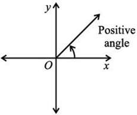
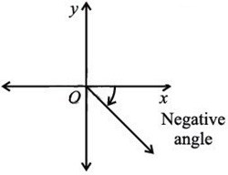

Class 9 Mathematics | Punjab Board Syllabus 2025
Trigonometry is a branch of mathematics that deals with the relationships between the angles and sides of a triangle, especially a right-angled triangle.
A plane figure formed by two rays sharing a common end point is called an angle. The rays are called sides and the common end point is called the vertex.
Note: Rays \( \overrightarrow{OA} \) and \( \overrightarrow{OB} \) form an angle \( AOB \). Written as \( \angle AOB \) or \( \widehat{AOB} \).
An angle is said to be in standard position if:
The angle is measured from the initial side to the terminal side, and is usually represented by Greek letters \( \theta \), \( \alpha \), \( \beta \), or \( \gamma \).
| Positive Angle | Negative Angle |
|---|---|
|
The angle is positive if the terminal side is rotated counterclockwise from the initial side. The given angle lies in the 1st quadrant. |
The angle is negative if the terminal side is rotated clockwise from the initial side. The given angle lies in the 4th quadrant. |
|  |  |
Plane geometry is the study of two-dimensional figures, such as points, lines, angles, triangles, and circles on a flat surface.
Euclidean geometry is the study of geometry based on axioms and theorems formulated by the Greek mathematician Euclid. It deals with flat space and includes shapes in two and three dimensions.
The types of angles based on their measures are:
| Type | Range |
|---|---|
| Acute angle | \( 0^\circ < \theta < 90^\circ \) |
| Obtuse angle | \( 90^\circ < \theta < 180^\circ \) |
| Right angle | \( \theta = 90^\circ \) |
| Straight angle | \( \theta = 180^\circ \) |
| Reflex angle | \( 180^\circ < \theta < 360^\circ \) |
| Full rotation | \( \theta = 360^\circ \) |
Co-terminal angles are angles that have the same initial side and same terminal side in standard position but may have different measures.
These angles differ by a multiple of \( 360^\circ \) or \( 2\pi \) radians. For example, \( 45^\circ \), \( 405^\circ \) and \( -315^\circ \) are co-terminal angles because:
\( 405^\circ = 45^\circ + 360^\circ \)
\( -315^\circ = 45^\circ - 360^\circ \)
A degree is a unit of measurement of an angle. It represents \( \left( \frac{1}{360} \right)^{th} \) of a full rotation around a point.
In simpler terms, a degree is the measure of an angle, with a complete circle being \( 360^\circ \).
Note: A circle has 360 degrees because the Babylonians used a base-60 number system. They chose 360 since it can be divided by many numbers, which made math easier. This idea was passed down and is still used today.
A full rotation around a central point forms an angle of \( 360^\circ \).
One-quarter of a full rotation, or a \( 90^\circ \) angle, is called a right angle.
A straight angle, or half of a full rotation, measures \( 180^\circ \).
The degree \( D^\circ \) measure is further divided into minutes \( M' \) and seconds \( S'' \):
\( 1^\circ = 60' \)
(60 minutes)
\( 1' = 60'' \)
(60 seconds)
\( 1^\circ = 3600'' \)
(60 × 60 seconds)
A radian is the angle subtended at the centre of a circle by an arc whose length is equal to the radius of the circle.
Radian is the SI unit of angular measure and is denoted by "rad".
Note: If a circle has a radius \( r \), and the arc length is also \( r \), then the angle \( \theta \) is:
\( \theta = \frac{r}{r} \)
\( \theta = 1 \)
In general, radian measure is calculated as:
\( \theta = \frac{\text{Arc length}}{\text{Radius}} \)
\( \theta = \frac{l}{r} \)
\( l = r\theta \)
\( 1^\circ = \frac{\pi}{180} \) radian
\( 1^\circ \approx 0.0175 \) radian
\( 1 \) radian \( = \left( \frac{180}{\pi} \right)^\circ \)
\( 1 \) radian \( \approx 57.295795^\circ = 57^\circ 17' 45'' \)
Trigonometric functions are the functions that relate the angles of a right-angled triangle to the ratios of its sides.
The main trigonometric functions include sine (sin), cosine (cos), and tangent (tan).
Trigonometric ratios are applied to acute angles in a right-angled triangle, and their use extends to angles greater than \( 90^\circ \) in various fields of mathematics and science.
Consider a right-angled triangle \( ACB \), where:
The trigonometric ratios for angle \( \theta \) are defined as:
| Function | Ratio | Reciprocal |
|---|---|---|
| Sine (sin) | \( \frac{\text{Perpendicular}}{\text{Hypotenuse}} = \frac{a}{c} \) | Cosecant (csc) = \( \frac{c}{a} \) |
| Cosine (cos) | \( \frac{\text{Base}}{\text{Hypotenuse}} = \frac{b}{c} \) | Secant (sec) = \( \frac{c}{b} \) |
| Tangent (tan) | \( \frac{\text{Perpendicular}}{\text{Base}} = \frac{a}{b} \) | Cotangent (cot) = \( \frac{b}{a} \) |
Note:
\( \tan\theta = \frac{\sin\theta}{\cos\theta} \)
Similarly \( \cot\theta = \frac{\cos\theta}{\sin\theta} \)
Mnemonic to Remember Trigonometric Ratios: If you can remember that Some People Have – Curly Brown Hair – Through Proper Brushes, you'll never forget your trigonometric ratios!
Consider a right-angled triangle ACB, where:
Using the trigonometric ratio of \( \angle B \):
\( \sin(90^\circ - \theta) = \frac{b}{c} \)
Using the trigonometric ratio of \( \angle A \):
\( \cos\theta = \frac{b}{c} \)
From these equations, we get:
\( \sin(90^\circ - \theta) = \cos\theta \)
Similarly:
\( \cos(90^\circ - \theta) = \sin\theta \)
\( \tan(90^\circ - \theta) = \cot\theta \)
\( \cot(90^\circ - \theta) = \tan\theta \)
\( \sec(90^\circ - \theta) = \csc\theta \)
\( \csc(90^\circ - \theta) = \sec\theta \)
\( \sin^2\theta + \cos^2\theta = 1 \)
\( 1 + \tan^2\theta = \sec^2\theta \)
\( 1 + \cot^2\theta = \csc^2\theta \)
In a right-angled triangle, the square of the length of hypotenuse is equal to the sum of the squares of the lengths of the other two sides.
\( (\text{Hypotenuse})^2 = (\text{Base})^2 + (\text{Perpendicular})^2 \)
\( H^2 = B^2 + P^2 \)
Consider a square \( ACBD \) with side length \( 1 \) unit. The diagonals of the square bisect the angles, so in triangle \( ABC \):
Using the Pythagoras theorem in \( \triangle ABC \):
\( c^2 = 1^2 + 1^2 \)
\( c^2 = 2 \)
\( c = \sqrt{2} \)
The trigonometric ratios are:
| Function | Ratio | Reciprocal |
|---|---|---|
| \( \sin 45^\circ \) | \( \frac{1}{\sqrt{2}} \) | \( \csc 45^\circ = \sqrt{2} \) |
| \( \cos 45^\circ \) | \( \frac{1}{\sqrt{2}} \) | \( \sec 45^\circ = \sqrt{2} \) |
| \( \tan 45^\circ \) | \( 1 \) | \( \cot 45^\circ = 1 \) |
Consider an equilateral triangle \( ABD \) with each side of length \( 2 \) units. Draw a perpendicular bisector \( \overline{BC} \) on \( \overline{AD} \), meeting it at point \( C \), so:
The trigonometric ratios of \( 30^\circ \) are:
| Function | Ratio | Reciprocal |
|---|---|---|
| \( \sin 30^\circ \) | \( \frac{1}{2} \) | \( \csc 30^\circ = 2 \) |
| \( \cos 30^\circ \) | \( \frac{\sqrt{3}}{2} \) | \( \sec 30^\circ = \frac{2}{\sqrt{3}} \) |
| \( \tan 30^\circ \) | \( \frac{1}{\sqrt{3}} \) | \( \cot 30^\circ = \sqrt{3} \) |
The trigonometric ratios of \( 60^\circ \) are:
| Function | Ratio | Reciprocal |
|---|---|---|
| \( \sin 60^\circ \) | \( \frac{\sqrt{3}}{2} \) | \( \csc 60^\circ = \frac{2}{\sqrt{3}} \) |
| \( \cos 60^\circ \) | \( \frac{1}{2} \) | \( \sec 60^\circ = 2 \) |
| \( \tan 60^\circ \) | \( \sqrt{3} \) | \( \cot 60^\circ = \frac{1}{\sqrt{3}} \) |
These results can be summarized in a table:
| \( \theta \) | \( 0^\circ \) | \( 30^\circ \) | \( 45^\circ \) | \( 60^\circ \) | \( 90^\circ \) |
|---|---|---|---|---|---|
| \( \sin\theta \) | \( 0 \) | \( \frac{1}{2} \) | \( \frac{1}{\sqrt{2}} \) | \( \frac{\sqrt{3}}{2} \) | \( 1 \) |
| \( \cos\theta \) | \( 1 \) | \( \frac{\sqrt{3}}{2} \) | \( \frac{1}{\sqrt{2}} \) | \( \frac{1}{2} \) | \( 0 \) |
| \( \tan\theta \) | \( 0 \) | \( \frac{1}{\sqrt{3}} \) | \( 1 \) | \( \sqrt{3} \) | \( \infty \) |
Angle of Elevation: The angle of elevation is the angle between the horizontal line (eye level) and a line drawn upward from the eye to the top of an object (e.g., a building).
Angle of Depression: The angle of depression is the angle between the horizontal line (eye level) and a line drawn downward from the eye to the foot of an object.